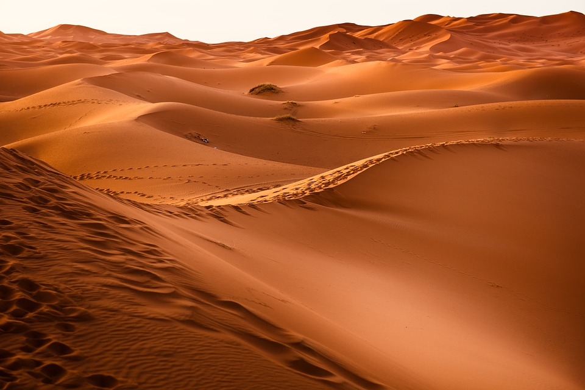
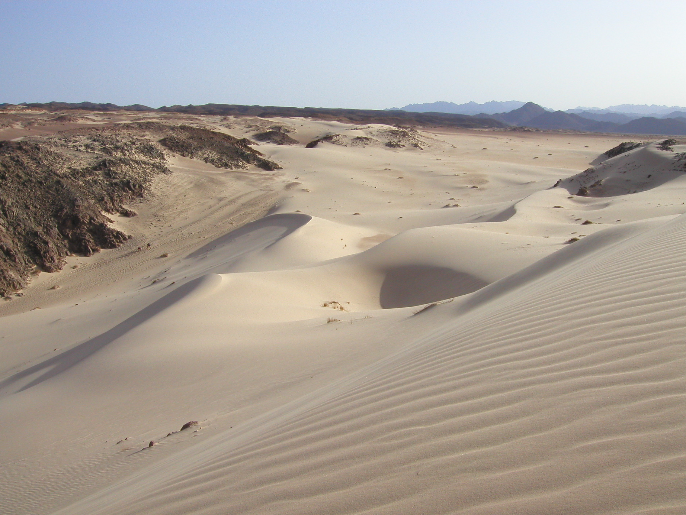

Deșertul sau pustiul este o zonă care primește foarte puține precipitații, aproximativ 250 mm pe an. Deșerturile au reputația de a susține foarte puține forme de viață deși, la o comparație mai atentă cu un mediu mai umed, formele de viață din deșert sunt de cele mai multe ori variate și rămân în general ascunse pentru a-și păstra umiditatea. Aproximativ o treime din suprafața Terrei este acoperită de deșerturi. In regiunile de deșert sunt în general diferențe mari de temperatură de la zi la noapte. Cauza lipsei de vegetație dintr-un deșert (pustiu) poate fi lipsa apei sau în regiunile arctice lipsa căldurii necesare vieții. Exista mai multe tipuri de desrt in diferite parti ale lumii. Unele sunt muntoase si stancoase,altele sunt pietroase sau pline de dune nisipoase. In timpul zilei,datorita caldurii,unele se transforma in adevarate cuptoare,in timp ce altele au ierni cumplit de reci.
Tipuri de desert
Deșerturi nisipoase (Erg)
In ținut stratul superior este alcătuit din nisip în care predomină cuarțul care a luat naștere prin fenomenul de eroziune datorat în special vântului, sub acțiunea căruia formează dune de nisip care pot fi mișcătoare. Condițiile de viață în aceste regiuni sunt vitrege, unul dintre deșerturile cele mai mari de acest tip este Rub al-Chali din Arabia. 
Deșerturi aride
In aceste pustiuri carența de apă, pământul uscat este cauza esențială, a lipsei vieții în regiune.
Deșerturi pietroase sau stâncoase (Hammada)
In acest caz stratul superficial este alcătuit din blocuri de piatră sau stânci, rezulat din crăparea rocilor cauzat de diferențele mari de temperatură și a înghețului.
Deșerturi cu pietriș (Serir)
Iau naștere prin procesele de eroziune și depunere a materialui adus de ghețari astfel de pustiuri se pot întâlni în Asia Centrală (Iran). 
Deșerturi de sare
Au luat naștere în regiuni aride unde sarea s-a depus după evaporarea apei în care era dizolvată.
Pustiuri de gheață
Pustiuri de gheață pot fi întâlnite în regiunea polară sau în munții înalți unde temperatura scăzută a împiedicat dezvoltarea vegetației. Apa fiind sustrasă solului prin îngheț, precipitațiile cad sub formă solidă (zăpadă). In această categorie se pot amiti regiunile polare, Wright Valley din Antarctica.Cele mai mari deserturi din lume
| Numar | Suprafata(km^2) | Denumire | Continent |
|---|---|---|---|
| 1 | 13.200.000 | Antarctida | Antarctida |
| 2 | 8.700.000 | Sahara | Africa |
| 3 | 1.560.000 | Deserturile Australiei | Australia |
| 4 | 1.300.000 | Arabia | Asia |
| 5 | 1.040.000 | Gobi | Asia |
| 6 | 900.000 | Kalahari | Africa |
| 7 | 330.000 | Takla Makan | Asia |
| 8 | 320.000 | Sonora | America de Nord |
| 9 | 273.000 | Karakum | Asia |
| 10 | 273.000 | Tharr | Asia |
Obiect de studiu
In aceste regiuni aride trăiesc plante și animale adaptate la carența de apă, ca:
-plante crassulaceae, tamaricaceae, euphorbiaceae, cactaceae xerophyte (cactus, salcâm, tamarix)
-animale ca: mustelidae de stepă, reptile, insecte, arthropode, scorpioni, păianjeni, gazele, dromaderi,
cămile.
Avand ca tema Mediul Tropical vi se vor prezenta informatii privind deserturile tropicale, atentia fiind
indreptata asupra celor situate in apropierea ecuatorului (nisipoase, aride, hamade).